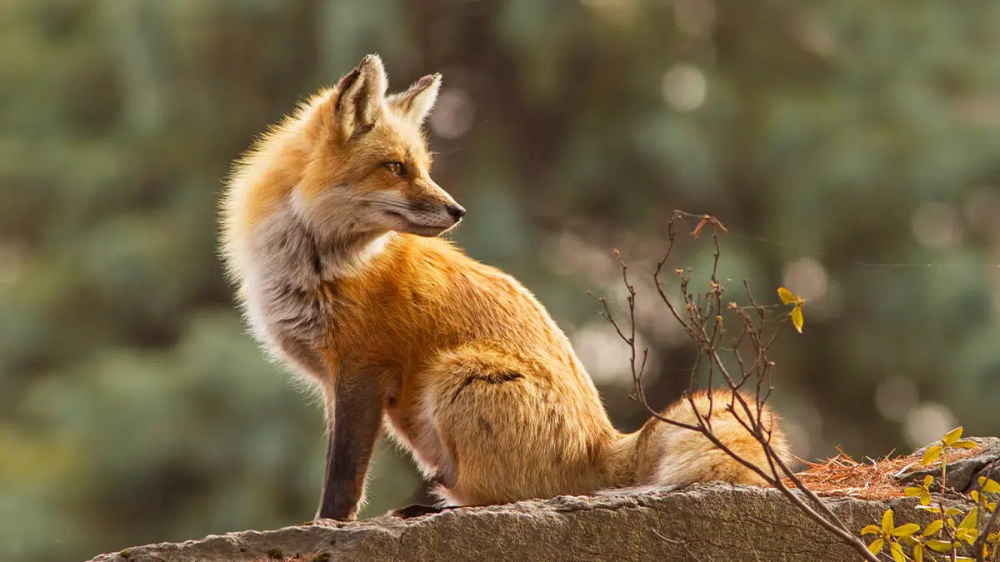

INTRODUCCÓN:
|  |
La mayoría de los zorros viven entre 5 a 7 años en libertad, aunque pueden llegar a alcanzar los 12 o incluso sobrepasar esa edad en cautiverio. Son generalmente más pequeños que otros miembros de la familia Canidae, tales como; lobos, chacales y perros domésticos. Sus rasgos típicos incluyen un fino hocico y una espesa cola. Otras características físicas varían según su hábitat. Por ejemplo, el zorro del desierto tiene largas orejas y pelaje corto, mientras que el zorro ártico tiene pequeñas orejas y un denso pelaje.
A diferencia de muchos cánidos, los zorros no son usualmente animales de manada. Son solitarios cazando su presa (especialmente roedores). Empleando una técnica de salto practicada desde una edad muy temprana en la que, dependiendo del terreno, utiliza una técnica u otra; por ejemplo en la nieve se dedica a escuchar la presa debajo de la gruesa capa y cuando predice los movimientos de la misma, da un salto muy alto en postura vertical para penetrar en la nieve con mayor eficacia y así alcanzar a la presa, son capaces de matar a su presa raudamente. Su dieta alimenticia incluye desde saltamontes a fruta y bayas, y presentan el fenotipo de glándula mamaria superdesarrollada.